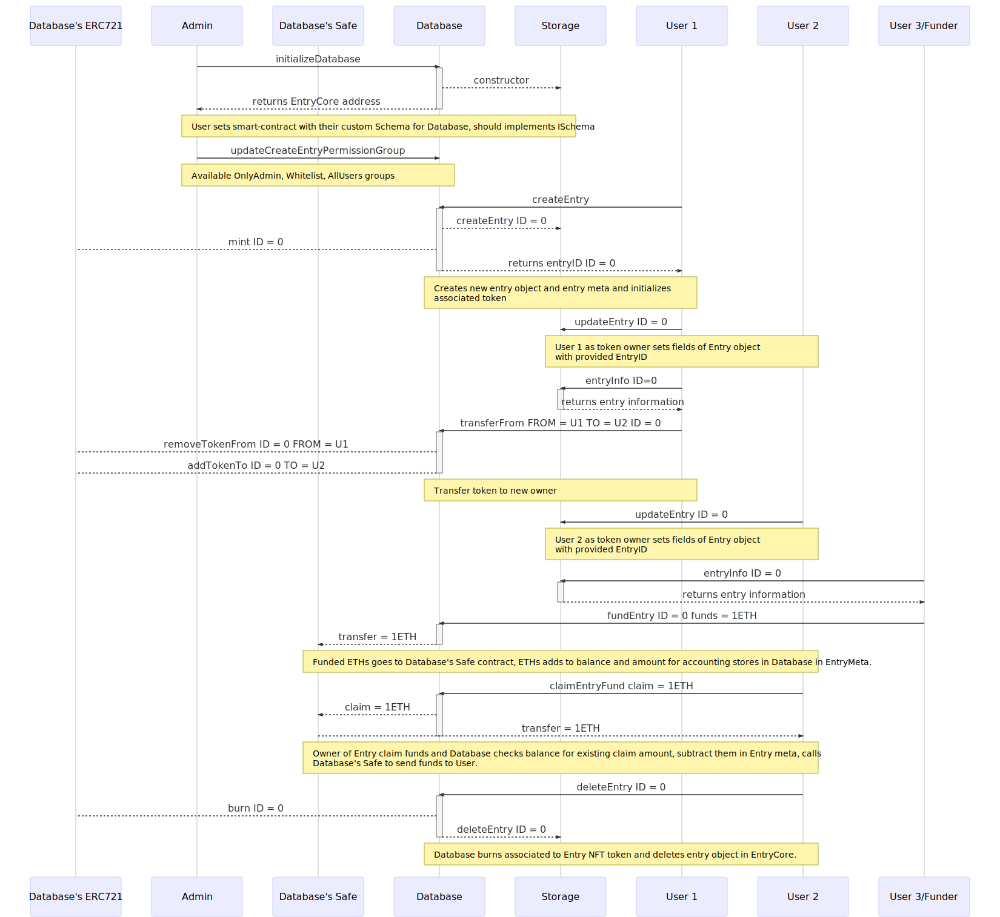
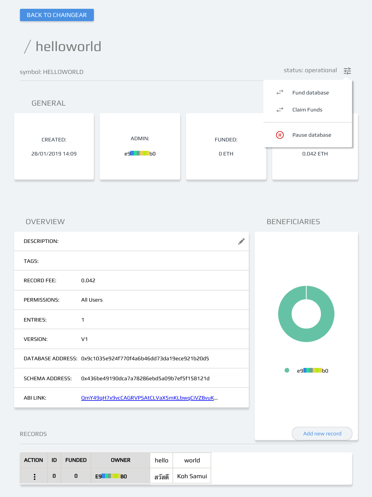

Chaingear
The consensus computer driven database framework
litvintech and xhipster, Developer’s Board Members, cyber•Congress
Position
With the rising of decentralized computing and web3 becoming, we need fundamental peace of web3 infrastructure as decentralized databases. But as web3 different to web2 there are new approaches and challenges for their development and operating. In this paper, we are describing principles of Chaingear and their Ethereum PoC - novel Ethereum’s open-source framework for developing tokenized databases based on smart-contracts with custom data schema and CRUD+TF operations for interacting with.
Principles of Chaingear
Chaingear is a set of smart contracts which operating in consensus computer with following principles:
- Databases creates by user createDatabase call for Chaingear witch mints database-linked NFT token for user and deploys database with support of CRUD+TF operations. Token controls adminship of database.
- Admin initializes database with given table/tables data schema.
- Database admin may set user permissions for entry creation and fee for adding.
- Each entry in database linked to NFT token (primary key) which grants a set of rights for token-entry operation as UPDATE/DELETE and TRANSFER/FUND.
- Chaingear for given platform acts as Consensus Computer Driven Database as a Service
- Application specific business logic should be available to operate on top of database/databases.
Chaingear on EVM, 0.1 Euler PoC
Chaingear
- Chaingear is database of database which allow deploy new databases from there and creates an associated token for adminship.
- Chaingear allow deploys different types of databases with defined functionality with connects with databases builders.
- Database Builder is a fabric of databases of given type.
- Databases may have their unique code base as an extension to the basic database.
- Database-token may be transferred, sold/traded alongside with their right adminship.
- Chaingear have fees for database creation.
- Chaingear have benefitiaries which may claim collected fees proportional to their shares.
Database
- A database is a smart contract which defines NFT tokens linked to entries. User creates database with given name and token symbol for entries.
- After deploy database admin initializes database with data schema table/tables and this allows them or/and other users to create a systematic collection of data, where rights to operations with entry defined by entry-token ownership.
- Entries data lives in Schema contract.
- Each entry may be publicly funded, an entry-token owner may claim collected funds.
- Database admin may set policy for entry creation: {OnlyAdmin, Whitelist, AllUsers} and fee for the entry-token creation and next claim fees.
- Also admin may set multiple database’s beneficiaries which may claim collected fees proportional to their shares.
Tokenization and CRUD+TF
- Operation CREATE initialize empty entry and mints token.
- READ are publicly available with token as primary key.
- Each entry-token grants token-based access to UPDATE/DELETE operations on entry. DELETE operation burns token and deletes entry.
- Each entry-token may be transferred with TRANSFER with rights to tokenized operations.
- Each entry-token may be FUND. CLAIM operation for allocated funds available for token owner.
Persistent sources and deterministic regeneration
For interaction with databases, we need ABI for contracts and source code for verification. ABIs and sources may be saved on some nodes and accessed with IPFS, but this access is not guaranteed. The Ethereum itself is persistent storage, and it’s a point to save ABIs and source code which guarantees databases operation. Our solution is save in database contract schema’s definition which allow deterministically regenerate ABI and source code of schema.
Gas
| Operation | Gas | Cost ETH, 10 Gwei/gas |
|---|---|---|
| createDatabase (chg) | ~3.5M | ~0.035 |
| initializeDatabase (db) | ~2-3M | ~0.02-0.03 |
| createEntry (db+st) | ~250-400K | ~ 0.0025-0.004 |
| readEntry* (st) | -/* | -/* |
| updateEntry (st) | ~140-250K | ~0.0014-0.0025 |
| deleteEntry (db+st) | ~180-250K | ~ 0.0018-0.0025 |
| transferFrom (db) | ~100K | ~0.001 |
Workflows
Chaingear setup and Database creation/schema initialization pipeline

Database CRUD/Entry-token pipeline

Chaingear’s Database-token pipeline

Inheritance
Chaingear inheritance

Database inheritance

web3 Application
General
| | |
|-|-|
| |
| |
|
Database
| | |
|-|-|
|| |
|
Database Deploy and Schema designer
| | |
|-|-|
| |
|
 |
|
Future work and releases
- Design and architecture, security
- Optimization of data writes and reads, column storage
- Advanced indexes.
- Release on new virtual machine
Development
Maintainers: @litvintech, @xhipster, @pechalka